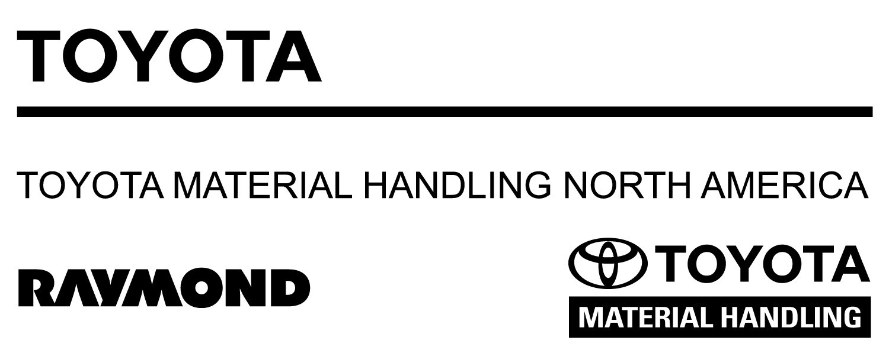

Toyota Material Handling Inc.
Applications Engineer II

- Design system architectures for autonomous guided vehicle fleet deployments and tailored warehouse-automation solutions.
- Analyze fleet performance and operational data to improve efficiency, guide product features, and support system enhancements.
- Develop system-design standards, best practices, and technical documentation for consistent, scalable deployments.
AutoCAD
AGV Systems
Kollmorgen
System Design
Data Analysis